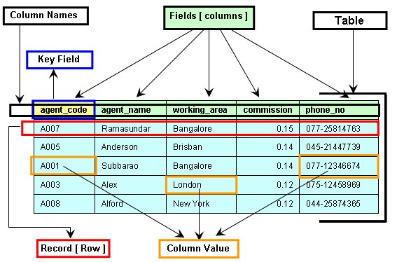

Introduction to MySQL
MySQL is often referred to as the most used Open-Source Relational SQL database management system or (RDBMS). MySQL was developed in the mid-90s by Michael Widenius, David Axmark and Allan Larsson. The name MySQL comes from a combination of "My", the name the primary developer Michael Widenius's daughter, and "SQL", which stands for Structured Query Language. MySQL was written in C and C++ and can work with a variety of platforms such as Windows, MacOS, Unix, and Linux to name a few. In order to fully understand MySQL, the user needs to have an understanding of databases, RDBMS, and SQL.
This short video goes into more detail of how and why it was developed: History of MySQL
How to install MySQL?
Installing MySQL on a Mac computer
- Open MySQL and scroll to the bottom of the page.
- Click on MySQL Community (GPL) Downloads » MySQL Community Server.
- After clicking MySQL Community server a new window will pop up, select the MacOS system. Below select DMG Archive. This will take you to a new page scroll to the bottom and select No thanks, just start my download to begin downloading.
- Open the download file and follow the instructions to complete the installation process. When it asks to create a password create a new password. This will be used again later.
- Next step is to download the graphical user interface that will allow us to manage the database system. Repeat Steps 1 and 2.
- Click on MySQL workbench and a new window will pop up select the MacOS system. Below select DMG Archive. This will take you to a new page scroll to the bottom and select No thanks, just start my download to begin downloading.
- Open the MySQL workbench and click on the plus button next to MySQL connections to create a new connection.
- A new window will pop up, select the connection name box and create a new name.
- Select the store in key Change and enter the password used during the installation process. Leave all other options as default.
- Finally in order to open the workbench go back to the start page and select the new connection that has been created.
Installing MySQL on a Windows PC
- Open MySQL and scroll to the bottom of the page.
- Click on MySQL Community (GPL) Downloads » MySQL Community Server.
- After clicking MySQL Community server a new window will pop up, select the Windows operating system. Below on the box that says MySQL installer on windows. This will take you to a new page scroll and select the first installer on the list. Next scroll to the bottom and select No thanks, just start my download to begin downloading.
- Open the download file and follow the instructions to complete the installation process.
- On the part titled Accounts and Roles it will ask to create a password, create a new password. This will be used again later.
- Continue the installation process until a section titled Connect to server appears. Type in the password created earlier to proceed to the next step.
- After finally completing the installation process a command line window will appear. Exit this and open MySQL workbench.
- Open the MySQL workbench and click on the plus button next to MySQL connections to create a new connection. A new window will pop up, select the connection name box and create a new name.
- Select the store in key Change and enter the password used during the installation process. Leave all other options as default.
- Finally in order to open the workbench go back to the start page and select the new connection that has been created.
What is a Database?
A database is an organized collection of data that is stored on a computer system. Every database has at least one or more APIs (Application Programming Interface) that allow the user to create, access, manage, search, and replicate the data being stored in it. Databases are used all over the world in a variety of different places like in hospitals, banks, and schools.
Relational DataBase Management System (RDBMS)
Relational DataBase Management System (RDBMS): These days we use something called relational database management systems RDBMS to store and manage large quantities of data. RDBMS is given its name because of the way the data is stored in the software. Each piece of data is grouped into separate tables that have relations which are created using something called primary and foreign keys.
Relational DataBase Management System Vocabulary:
The figure below represents the basic view of a database table:
MySQL vs SQL
MySQL
SQL
MySQL/SQL Commands
In order to store, retrieve, modify, and manage a database the user must learn SQL commands. These commands can be split up into four categories: Data Definition Language (DDL), Data Query Language (DQL), Data Manipulation Language (DML), and Data Control Language (DCL).
Examples of DDL commands:
Data Definition Language: DDL refers to the set of SQL commands that can create and manipulate the structure of the database.
Examples of DML commands:
Data Manipulation Language: DML deals with data manipulation and includes the most common SQL statements.
Examples of DQL commands:
Data Query Language: DQL is used as a way to perform a query on the data within schema objects. A schema object is a logical structure created by the users.
Examples of DCL commands:
Data Control Language: DCL is used to control access to data stored in a database.
For a more in depth guide to SQL visit: https://www.w3schools.com/mysql/default.asp
Video Tutorial
This tutorial explains in more detail everything that is needed to get started in MySQL.